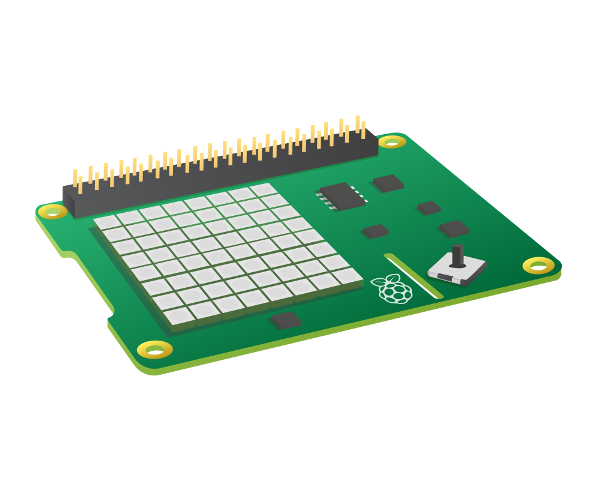

Vamos a realizar nuestro segundo RETO.
Recuerda quetomaremos los datos ambientáles que hay en el interior de la ISS.
Para ello le vamos a sacar el máximo partido a nuestra AstroPi utilizando su Sense HAT.
¡Manos a la obra!
Vamos a realizar nuestro segundo RETO.
Recuerda quetomaremos los datos ambientáles que hay en el interior de la ISS.
Para ello le vamos a sacar el máximo partido a nuestra AstroPi utilizando su Sense HAT.
¡Manos a la obra!
Sense HAT es una placa adicional para Raspberry Pi, hecha especialmente para la competencia Astro Pi . La placa le permite realizar mediciones de temperatura, humedad, presión y orientación, y generar información utilizando su matriz LED incorporada.

Antes de conectar cualquier Sense HAT a su Raspberry Pi, asegúrese de que la Pi esté apagada.

Si no tiene acceso a un Sense HAT, puede usar el emulador.
Hay un emulador en línea que puede usar en su navegador para escribir y probar código para el Sense HAT.

Vamos a mostrar un texto en Astro Pi "HOLA MUNDO!!!" en la pantalla LED de Sense HAT.
Lo primero crearemos un proyecto en Trinket que se llame SENSORES, en la primera pestaña del archivo principal de Python tenemos una archivo que vamos a empezar a escribir que se llama main.py
Agregua este código para mostrar un mensaje en la matriz LED del Sense HAT.
sense.show_message("HOLA MUNDO!!!")Prubébalo en Trinket presionando el botón RUN. Truco.
Vamos a utilizar parámetros adicionales en nuestro texto:
scroll_speed : afecta la rapidez con la que el texto se mueve por la pantalla. El valor predeterminado es 0.1. Cuanto mayor sea el número, menor será la velocidad.
text_colour : altera el color del texto y se define a través de tres valores para especificar rojo, verde y azul. Estos también se denominan valores RGB.
back_colour : altera el color del fondo y funciona de la misma forma que text_colour.
Código que muestra nuestro texto:
sense.show_message("¡Astro Pi es GENIAL!!!", text_colour=yellow, back_colour=blue, scroll_speed=0.05)No olvides agregar las líneas de código que necesites en #variables como en el siguiente ejemplo:
#variables
blue = (0, 0, 255)
yellow = (255, 255, 0)Puedes insertar la orden en un bucle infinito, igual que hacíamos en Scratch con la orden "por siempre":
#órdenes
while True:
#Aquí vamos a añadir el código que muestra nuestro textoVamos a poner todo junto.Ponemos todo junto. Veamos este ejemplo de código de texto cambiándo sus parámetros de color de texto, color de fondo y su velocidad de desplazamiento:
#Configuraciones iniciales
from sense_hat import SenseHat
from time import sleep
sense = SenseHat()
sense.set_rotation(0)
#variables
blue = (0, 0, 255)
yellow = (255, 255, 0)
#órdenes
while True:
sense.show_message("¡Astro Pi es GENIAL!!!", text_colour=yellow, back_colour=blue, scroll_speed=0.05)El color de un objeto depende del color de la luz que refleja o emite. La luz puede tener diferentes longitudes de onda, y el color de la luz depende de la longitud de onda que tenga. El color de la luz según su longitud de onda se puede ver en el siguiente diagrama. Puede reconocer esto como los colores del arcoíris.

Los humanos ven el color debido a células especiales en nuestros ojos. Estas células se llaman conos . Tenemos tres tipos de celdas cónicas, y cada tipo detecta luz roja, azul o verde. Por lo tanto, todos los colores que vemos son solo mezclas de los colores rojo, azul y verde.

En la mezcla de colores aditivos, se usan tres colores (rojo, verde y azul) para hacer otros colores. En la imagen de arriba, hay tres focos de igual brillo, uno para cada color. En ausencia de cualquier color el resultado es negro. Si se mezclan los tres colores, el resultado es blanco. Cuando el rojo y el verde se combinan, el resultado es amarillo. Cuando se combinan rojo y azul, el resultado es magenta. Cuando el azul y el verde se combinan, el resultado es cian. Es posible hacer incluso más colores variando el brillo de los tres colores originales utilizados.
Las computadoras almacenan todo como 1 y 0. Estos 1 y 0 a menudo se organizan en conjuntos de 8, llamados bytes.
Un solo byte puede representar cualquier número desde 0 hasta 255.
Podemos anular esta línea de código poniendo delante un hastag (#) para probar la pieza de código por partes.
¿Qué es 255? Ese es el máximo. ¿Y qué tiene que ver eso con el 255? Pues resulta que es el valor más alto del sistema decimal que puede traducirse a un binario de ocho dígitos. Es decir, el 0 del sistema decimal corresponde al 00000000 del binario y el 255 corresponde al 11111111.
El Sense HAT tiene un conjunto de sensores ambientales para detectar las condiciones del entorno; Puede medir la presión, la temperatura y la humedad.
En un archivo de Python main.py de Trinket, ingrese el siguiente código para medir la temperatura:
#configuraciones iniciales
from sense_hat import SenseHat
sense = SenseHat()
sense.clear()
#variables
temp = sense.get_temperature()
temp = round (temp,1) #redondeamos a un decimal
#órdenes
print(temp)Podemos ir módificando el Trinket con el slider la temperatura y vemos los valoes que se van imprimeiendo en las distintas situaciones.
En un archivo de Python main.py de Trinket, ingrese el siguiente código para medir la humedad:
#Configuraciones iniciales
from sense_hat import SenseHat
sense = SenseHat()
sense.clear()
#variables
humidity = sense.get_pressure()
humidity = round (humidity, 1) #redondeamos a un decimal
#órdeces
print(humidity)Podemos ir módificando el Trinket con el slider la humedad y vemos los valoes que se van imprimeiendo en las distintas situaciones.
Mostrar resultados en el display
Vamos a crear una pantalla de texto desplazable que mantenga a las personas informadas sobre las lecturas actuales de temperatura y humedad. Puede usar el código de visualización de texto desplazable que escribió en el paso 'Mostrar texto' como ayuda.
#Configuraciones iniciales
from sense_hat import SenseHat
sense = SenseHat()
# Variables
temp = sense.get_temperature()
humidity = sense.get_humidity()
temp = round(temp, 1)
humidity = round(humidity, 1)
message = "Temperature: " + str(temp) + " Humidity: " + str(humidity)
# Órdenes
sense.show_message(message, scroll_speed=0.05)
Vamos a añadir una orden condicional a nuestro código
¿Te acuerdas cuando hacíamos esto en Scartch si (CONDICIÒN) entonces (ORDEN QUE SE EJECUTA SI SE CUMPLE LA CONDICIÓN)?
La orden en Python es: if temp > 40: en la siguiente línea Python necesita que el código esté indentado o remetido un par de espacios (si esto no lo hacemos bien tendremos un error que Trinket indicará señalándolo de color rojo.
Indentación
¿Qué es una indentación Python?
Python utiliza la indentación para delimitar la estructura permitiendo establecer bloques de código.
En Python no existen comandos para finalizar las líneas ni llaves con las que delimitar el código. Los únicos delimitadores existentes son los dos puntos ( : ) y la indentación del código.
Vamos paso a paso:
Vamos a añadir estas variables a nuestro código:
#Nuevas variables
g = (240, 224, 45) #arena
n = ( 20, 200, 200) #cielo
a = (227, 250, 75) #sol
w = (255, 255, 255) #blanco
b = ( 54, 106, 226) #agua
e = (176, 124, 33) #marron osculo
o = (255, 0, 0) #rojo
c = (100,100,100)
y = (255,255,0)
hot = [
n, n, n, n, n, a, a, n,
n, n, n, n, a, a, a, a,
n, n, n, n, n, a, a, n,
n, n, n, n, n, n, n, n,
n, n, n, n, n, n, n, n,
n, n, n, n, n, n, n, n,
g, g, g, g, g, g, g, g,
g, g, g, g, g, g, g, g
]
cold = [
n, n, w, n, n, n, w, n,
n, n, n, n, n, w, n, n,
n, w, n, n, n, n, n, w,
n, n, n, n, w, n, n, n,
w, n, n, w, n, n, w, n,
n, n, n, n, n, n, n, n,
w, w, w, w, w, w, w, w,
w, w, w, w, w, w, w, w
]
wet = [
b, b, b, b, b, b, b, b,
b, b, b, b, b, b, b, b,
b, o, b, o, o, o, b, b,
b, o, o, o, o, e, o, b,
b, o, o, o, o, o, o, b,
b, o, b, o, o, o, b, b,
b, b, b, b, b, b, b, b,
b, b, b, b, b, b, b, b
]
dry= [
c, c, g, g, c, c, c, c,
c, c, g, g, c, g, c, c,
g, c, g, g, c, g, c, c,
g, c, g, g, c, g, c, c,
g, g, g, g, g, g, c, c,
c, c, g, g, c, c, c, c,
y, y, y, y, y, y, y, y,
y, y, y, y, y, y, y, y
]Ahora te toca a ti, debes incluir dos condiciones una para la temperatura cuando asciende de 26.7 grados y humedad cuando para del 60 %.
Sintaxis para ambos casos:
if temp > 40.0:
#Visualizaremos hot
sleep(3)
else:
#Visualizaremos could
sleep(3)
if humidity > [añadimos valor]:
#Visualizaremos wet
else:
#Visualizaremos dry
sleep(3)¿Por qué necesitamos las pausas en el primer if y no en el segundo if? [Reflexiona tu respuesta]
¿Cuál era la temperatura máxima que debe haber el la ISS? ¿Está bien el ejemplo? [Corrige tu código]
Cuando realizamos tareas tan complejas, que integran muchos saberes es necesario aplicar conocimientos de varias asignaturas para realizarlo correctamente.
Cuando nos esforzamos mucho nuestro trabajo es valorado por nuestros profes y familiares. Pero lo más importante es que nos sentimos muy contentos por el trabajo realizado.
Sigue así en los siguientes. Enhorabuena.
Obra publicada con Licencia Creative Commons Reconocimiento No comercial Compartir igual 4.0